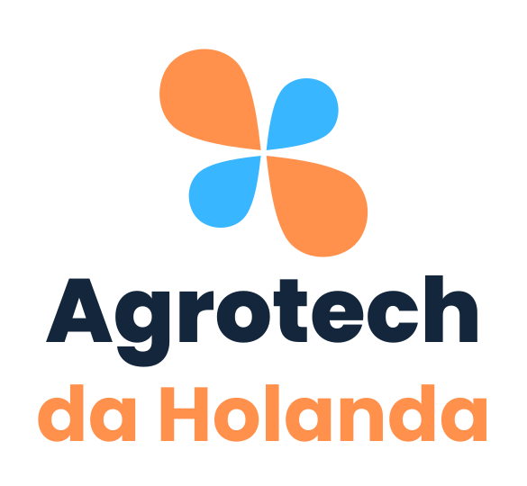
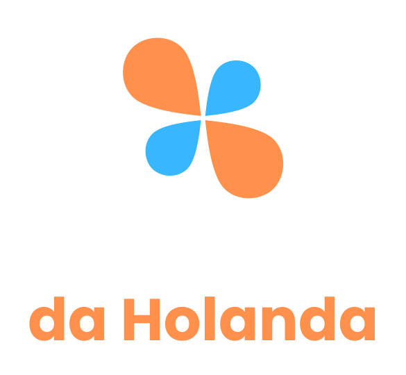
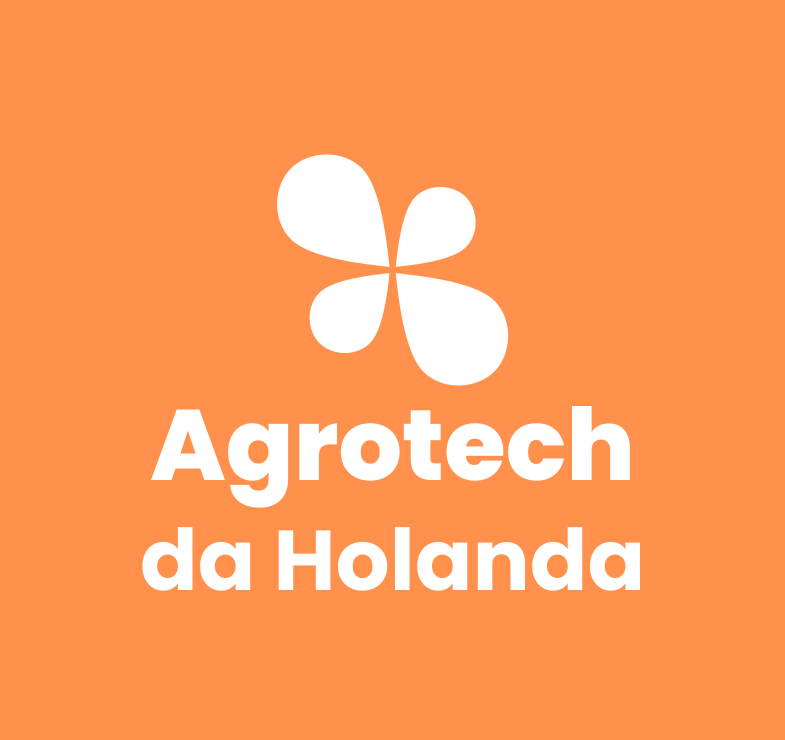
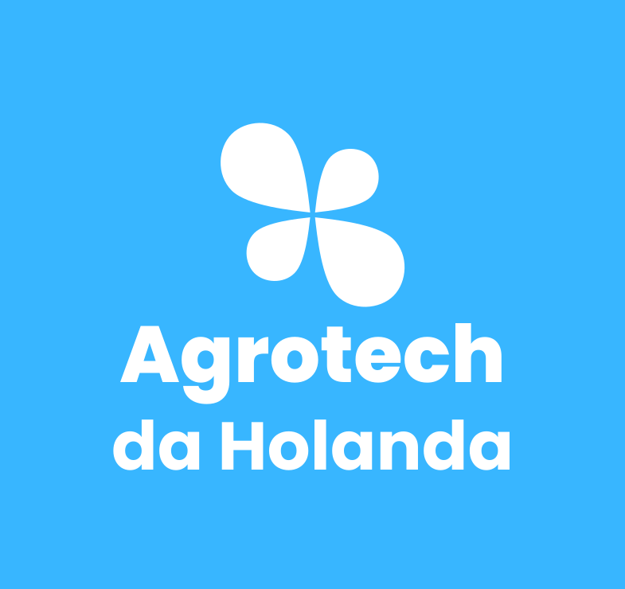
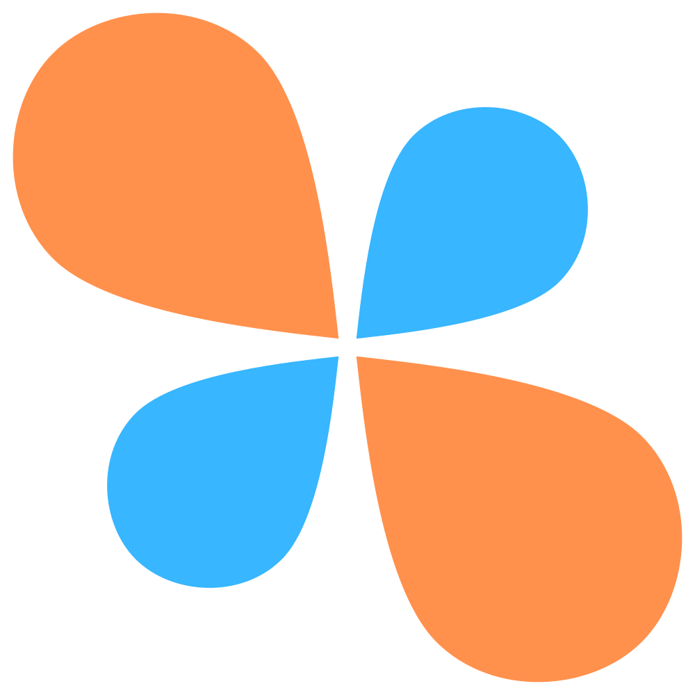

Guia de marca
Marca v2 · julho de 2026
Agrotech da Holanda é a marca brasileira da Dutch Flow Technology, empresa neerlandesa de irrigação solar e câmaras frias solares. O nome usa da Holanda, com o artigo, porque em português o artigo força a leitura de país: um sobrenome pede de (como em Sérgio Buarque de Holanda), o país pede a Holanda, logo da Holanda. Essa construção afasta a ambiguidade com o sobrenome Holanda, comum em empresas familiares brasileiras. A categoria fica na frase de posicionamento, não no nome.

Agricultura movida a energia solar Irrigation & Cooling Water your crops and protect your harvest with our solutions.
Hierarquia de assinatura: a frase-marca em português, Agricultura movida a energia solar (a regência correta é movida a, como em movido a diesel; nunca movida pela); o descritor de categoria em inglês, Irrigation & Cooling; e o subtítulo de valor, Water your crops and protect your harvest with our solutions.
Linha de posicionamento completa, para superfícies formais e o público de governo: Agricultura movida a energia solar. Segurança hídrica e energética, dentro e depois da fazenda. A segunda oração é a moldura da própria Embrapa e cobre as duas linhas de produto: irrigação solar (dentro da fazenda) e câmara fria solar (depois da fazenda).
A marca de quatro pétalas e a paleta laranja e azul vêm da matriz. Essa continuidade visual é intencional: quem conhece a Dutch Flow Technology reconhece a Agrotech da Holanda de imediato.
O conjunto principal é empilhado: marca no topo, Agrotech em Poppins 800 navy, da Holanda em Poppins 700 laranja, a 85% do tamanho. Use sempre os arquivos oficiais. Nunca redesenhe nem redigite o conjunto.
Empilhado, sobre fundo claro (papel ou branco). O padrão.

Empilhado escuro, sobre navy ou fotografia escura.
Horizontal, para cabeçalhos largos e baixos.

Branco sobre laranja.

Branco sobre azul.
Preto, uma cor só. Impressão P&B, carimbo, gravação.

Branco, uma cor só. Sobre fundo escuro sólido.
As versões de cor cheia (laranja e azul) e as monocromáticas (preto e branco) usam a marca em
uma cor sólida. Nunca recomponha essas cores à mão: use sempre os arquivos oficiais em
assets/brand/ (SVG mestre, PNG para uso raster).

Cores plenas, para espaços pequenos, avatares e favicon.
A unidade x é a altura da pétala azul da marca, cerca de um quinto da altura do conjunto empilhado. O espaço livre mínimo é 1x em todos os lados, em qualquer tamanho: a regra é proporcional, nunca um valor fixo em pixels ou milímetros. A mesma unidade governa a distância entre a marca e a linha de endosso.
Conjunto empilhadotela: 80 px de altura · impressão: 20 mm
Marca isoladatela: 24 px de altura
Favicon16 px, apenas a marca
Se a legibilidade falha no tamanho exigido, troque para a versão seguinte da cascata em vez de reduzir mais.
Não reduza um conjunto abaixo do tamanho mínimo: troque para o próximo nível da cascata.
distorça as proporções
altere as cores
rotacione ou incline
aplique sombras ou efeitos
redigite ou reorganize o conjunto
use sobre foto carregada sem véu
use sobre fundo de baixo contraste
use o wordmark DFT no lugar do conjunto
Na fotografia, use a versão escura sobre áreas escuras ou aplique um véu (navy a 55% ou mais) antes do conjunto claro. O wordmark da matriz identifica a Dutch Flow Technology, nunca a Agrotech da Holanda.
A paleta vem da matriz: laranja e azul sobre navy e papel. Verde foi considerado e descartado, a continuidade com a Dutch Flow Technology vale mais que o clichê do setor. Clique em um código para copiá-lo.
Razões de contraste calculadas com a fórmula de luminância relativa do WCAG. Limiares: texto normal AA 4,5:1 · texto grande AA 3:1 · AAA 7:1.
| Par (texto sobre fundo) | Amostra | Contraste | AA normal (4,5:1) | AA grande (3:1) | AAA (7:1) |
|---|---|---|---|---|---|
| Navy sobre papel | Aa | 14,66:1 | passa | passa | passa |
| Navy sobre laranja | Aa | 6,86:1 | passa | passa | reprova |
| Laranja sobre navy | Aa | 6,86:1 | passa | passa | reprova |
| Azul sobre navy | Aa | 6,78:1 | passa | passa | reprova |
| Laranja sobre branco | Aa | 2,23:1 | reprova | reprova | reprova |
| Azul sobre branco | Aa | 2,26:1 | reprova | reprova | reprova |
| Branco sobre laranja | Aa | 2,23:1 | reprova | reprova | reprova |
| Branco sobre azul | Aa | 2,26:1 | reprova | reprova | reprova |
Uma família só: Poppins, nos pesos 400, 600, 700 e 800. A fonte é livre
(licença SIL OFL) e sempre auto-hospedada em assets/fonts/. Nunca carregue
tipografia de CDN externo: o site opera sem nenhuma requisição a terceiros.
Agrotech da Holanda
Agricultura irrigada movida a energia solar
Segurança hídrica e energética, dentro e depois da fazenda
A câmara fria solar reduz as perdas pós-colheita na propriedade: o produtor colhe, resfria e vende na hora certa. abcdefghijklmnopqrstuvwxyz ABCDEFGHIJKLMNOPQRSTUVWXYZ áâãàçéêíóôõú
0123456789 · 10 ha · +10 °C a −5 °C · 2%
Português brasileiro, tratamento você em todas as superfícies de marca. Em conversa de campo com produtores mais velhos, abra com o senhor e deixe a pessoa definir o registro. Nunca tu em texto de marca. O tom muda por público, a promessa é a mesma.
Público 1
Curto e direto. Resultado antes de tecnologia.
Público 2
Escala coletiva. Números que sobrevivem ao encaminhamento.
Público 3
Registro formal e simples, sem superlativos de marketing.
A arquitetura é de marca endossada: a Agrotech da Holanda lidera, a Dutch Flow Technology assina como origem da tecnologia. Regras:
Tecnologia da Dutch Flow Technology, Países Baixos
O endosso aparece em superfícies de primeiro contato e formais: rodapé e hero do site, propostas, contratos, adesivagem de contêiner, banners de feira.
Agrotech da Holanda
Para momentos sem logotipo: assinatura de e-mail, cabeçalhos de texto, linhas de co-marca.
Poppins 700, Agrotech em azul, da Holanda em laranja. Exportado em
wordmark-duotone.svg. É um elemento gráfico em tamanho de destaque, sobre papel
ou branco; para texto corrido valem as regras de cor da seção 03.
Três telhas aprovadas: branco e navy (cores plenas) e laranja (marca branca). Exportadas em
avatar-white.svg, avatar-navy.svg e avatar-orange.svg.
Use nos perfis sociais e no WhatsApp Business. O apple-touch-icon.png (marca
colorida sobre navy) e o favicon.ico derivam da mesma marca.
Fundo claro: preenchimento laranja ou azul com texto navy, ou contorno navy. Fundo navy: texto e contornos em laranja e azul. As combinações seguem a tabela de contraste da seção 03.
O kit está completo. Tudo que faltava na v1 foi entregue; resta um único item, que depende da matriz.
logo-horizontal.svg.og-image.png (1200×630), já ligada ao site.favicon.ico (16/32/48) e apple-touch-icon.png (180).wordmark-duotone.svg, avatar-white/navy/orange.svg.